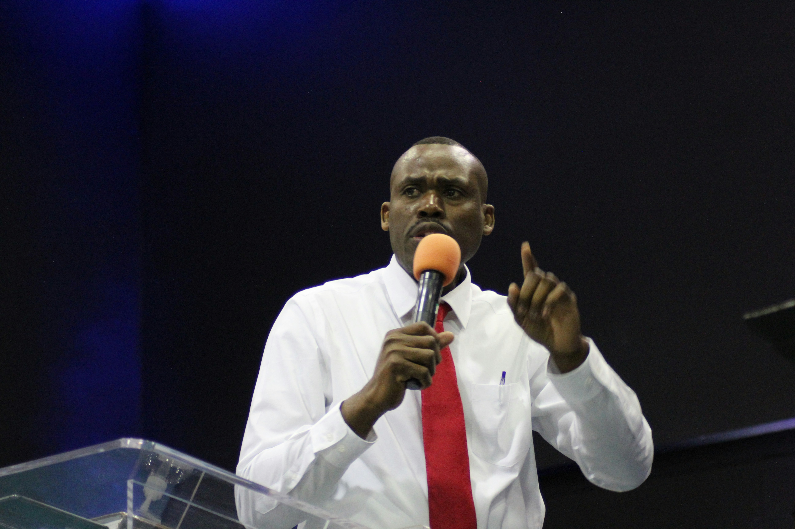

Pastor David Mensah
Senior Pastor
Pastor David Mensah serves as our Senior Pastor, bringing over 15 years of pastoral experience in gospel ministry, family counseling, and community outreach. Passionate about teaching the Word of God and sharing the Blessed Hope, Pastor David dedicates his ministry to empowering members to live out Christ's love daily. He holds a Master of Divinity from Adventist University and enjoys spending quality time with his family, reading, and organizing community health expos.
Get In Touch →